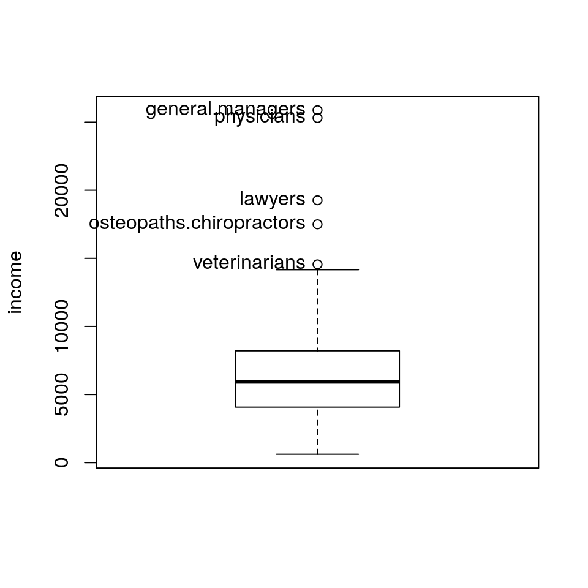
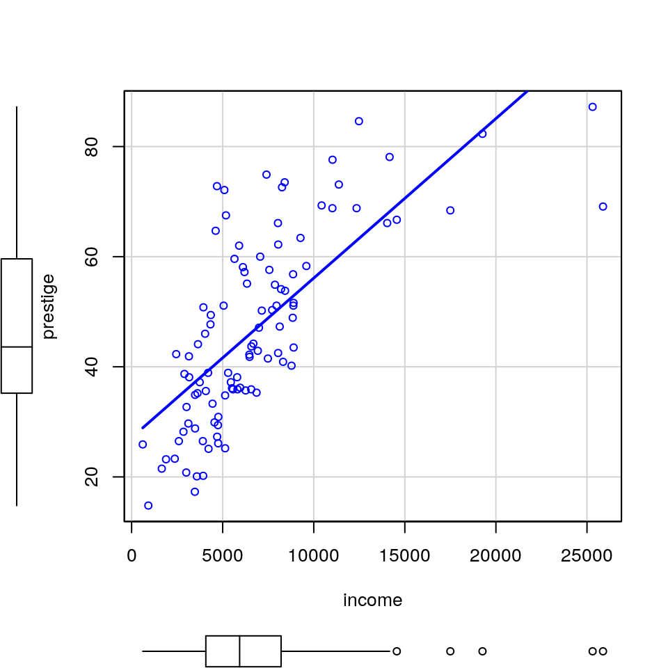
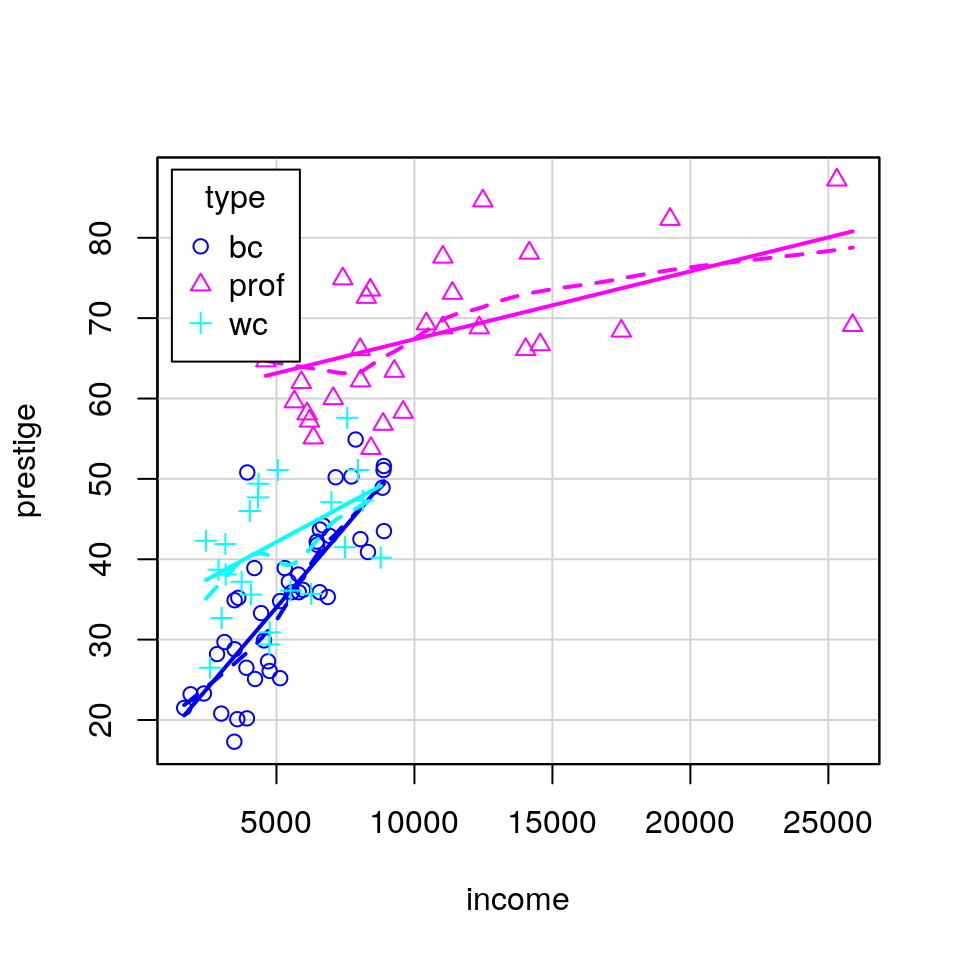
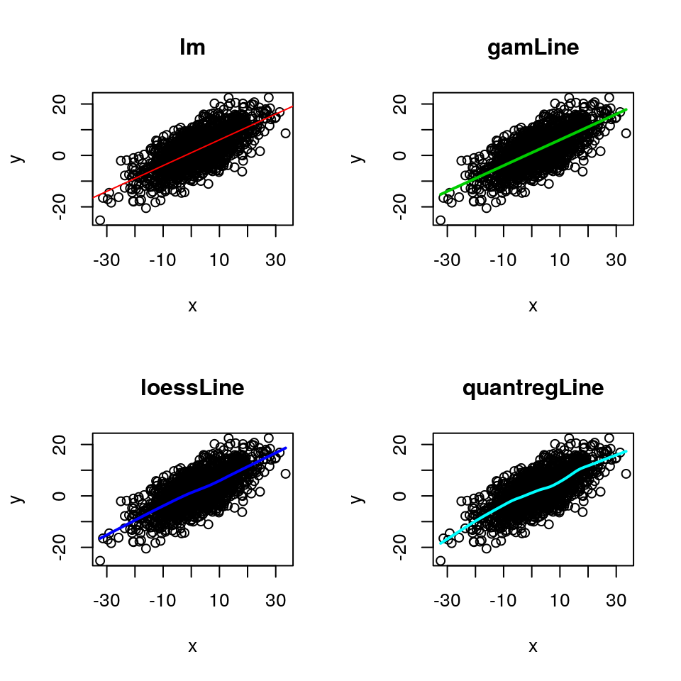
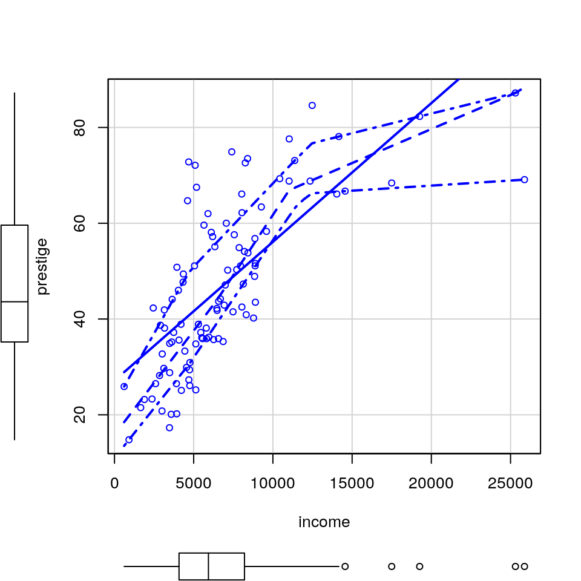

|
Companion to Applied Regression
|
Tratamento de dados e análise exploratória
- Importação/exportação.
- Recodificação.
- Amostragem.
- Gráficos de dispersão.
- Linhas de regressão suave.
- etc.
1 Funções
2 Exemplos
2.2 Importação
Import data from many file formats
## Sepal.Length Sepal.Width Petal.Length Petal.Width Species
## 1 5.1 3.5 1.4 0.2 setosa
## 2 4.9 3.0 1.4 0.2 setosa
## 3 4.7 3.2 1.3 0.2 setosa
## 4 4.6 3.1 1.5 0.2 setosa
## 5 5.0 3.6 1.4 0.2 setosa
## 6 5.4 3.9 1.7 0.4 setosa2.3 Recodificação
Recode a Variable
## [1] 1 2 3 1 2 3 1 2 3## Warning: Unreplaced values treated as NA as .x is not compatible. Please
## specify replacements exhaustively or supply .default## [1] "c(1,2)='A'; else='B'" NA NA
## [4] "c(1,2)='A'; else='B'" NA NA
## [7] "c(1,2)='A'; else='B'" NA NA## [1] "A" "A" "B" "A" "A" "B" "A" "A" "B"2.4 Encontrar row names
Position of Row Names
## minister conductor
## 6 16## type income education prestige
## minister prof 21 84 87
## conductor wc 76 34 382.5 Aplicar função para cada nível de um fator
Apply a Function to a Variable Within Factor Levels
## setosa versicolor virginica
## 5.006 5.936 6.588## setosa versicolor virginica
## 0.3524897 0.5161711 0.63587962.6 Amostragem
Sample a Few Elements of an Object
## Sepal.Length Sepal.Width Petal.Length Petal.Width Species
## 23 4.6 3.6 1.0 0.2 setosa
## 37 5.5 3.5 1.3 0.2 setosa
## 39 4.4 3.0 1.3 0.2 setosa
## 59 6.6 2.9 4.6 1.3 versicolor
## 64 6.1 2.9 4.7 1.4 versicolor2.7 Print abreviado
Print Abbreviated Ouput
## 100 element numeric vector
## [1] 1.31118224 -0.65345553 -0.74948274 0.04064765 1.36207757
## [6] 0.44713145 0.39562092 -0.12004672 1.12097892 2.32322526
##
## . . . (17 lines omitted)
##
## [96] -0.94761613 -0.61723550 -0.61318185 -0.80320838 -0.33558949## 45 x 4 data.frame (40 rows omitted)
## type income education prestige
## [f] [i] [i] [i]
## accountant prof 62 86 82
## pilot prof 72 76 83
## architect prof 75 92 90
## . . .
## policeman bc 34 47 41
## waiter bc 8 32 102.8 Densidade não paramétrica
Nonparametric Density Estimates
x <- rnorm(100)
y <- rgamma(100, shape = 1.5, rate = 2)
par(mfrow = c(2,2))
densityPlot(x)
densityPlot(y)
densityPlot(~income, data=Prestige)
densityPlot(income ~ type, kernel=dnorm, data=Prestige)
#densityPlot(income ~ type, kernel=depan, data=Prestige)
#densityPlot(income ~ type, kernel=dbiwt, data=Prestige)2.9 Boxplots com identificação de pontos
Boxplots With Point Identification
2.9.3 Exemplo 3

## [1] "general.managers" "lawyers"
## [3] "physicians" "veterinarians"
## [5] "osteopaths.chiropractors"2.10 Scatterplots
Enhanced Scatterplots with Marginal Boxplots, Point Marking, Smoothers, and More


2.10.3 Exemplo 3

2.10.4 Exemplo 4

2.11 Regressão suave em Scatterplots
Smoothers to Draw Lines on Scatterplots
2.11.1 Exemplo 1
v1 = rnorm(1500, 1, 5)
v2 = rnorm(1500, 1, 5)
x = v1*2
y = v1+v2
par(mfrow = c(2,2))
plot(y~x, main = 'lm')
abline(lm(y~x), col = 2)
plot(y~x, main = 'gamLine')
gamLine(x, y, col = 3)
plot(y~x, main = 'loessLine')
loessLine(x, y, col = 4)
plot(y~x, main = 'quantregLine')
quantregLine(x, y, col = 5)
2.11.4 Exemplo 4

2.12 Scatterplot Matrices
2.13 Data Ellipses
2.14 Contrastes
Functions to Construct Contrasts
ct <- lm(prestige ~ (income + education)*type, data=Prestige,
contrasts=list(type="contr.Treatment"))
cs <- lm(prestige ~ (income + education)*type, data=Prestige,
contrasts=list(type="contr.Sum"))
ch <- lm(prestige ~ (income + education)*type, data=Prestige,
contrasts=list(type="contr.Helmert"))